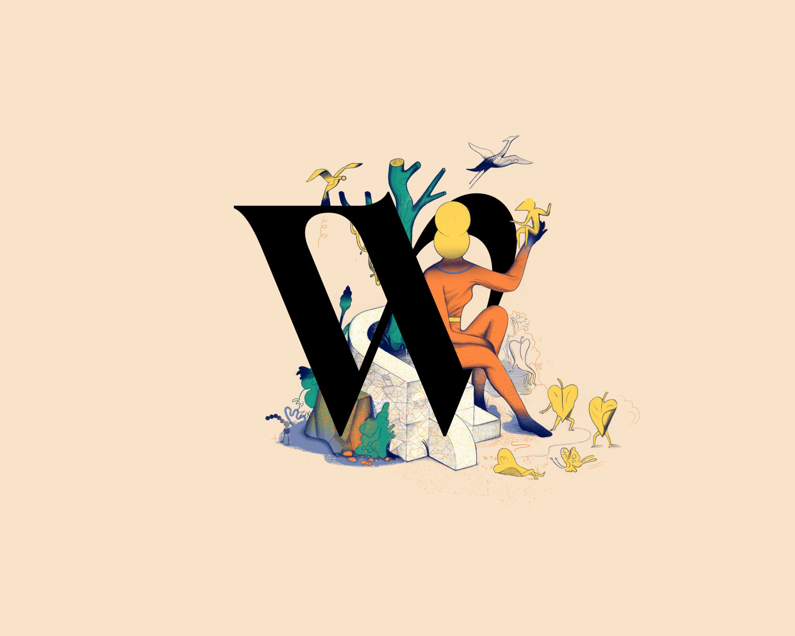

Via Raimondo Franchetti
1 maggio — ore 18:00
Inaugurazione
La mostra "Visioni Illustrate: Viaggio nell'Illustrazione Contemporanea" inaugurerà il primo maggio alle 18:00, segnando l'inizio di un'esclusiva esposizione dedicata all'illustrazione contemporanea che promette di essere un punto di riferimento culturale per il mese a venire. Questo evento speciale offrirà agli appassionati d'arte, agli illustratori, ai designer e al pubblico generale l'opportunità di immergersi in un mondo dove la creatività non conosce confini. L'inaugurazione sarà non solo un'anteprima delle opere esposte, ma anche un'occasione per incontrare alcuni degli artisti partecipanti, condividere pensieri e discutere le diverse interpretazioni e ispirazioni dietro ogni pezzo.